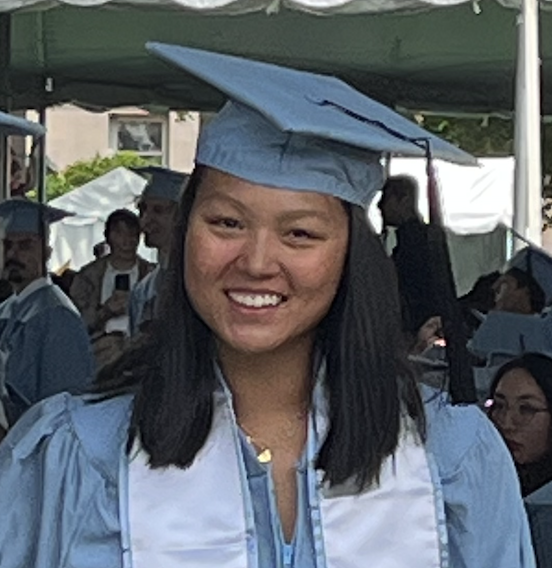

|

|
I earned my BS in Computer Science from Columbia University (Fu Foundation School of Engineering and Applied Science), where I was fortunate enough to be advised by Asaf Cidon and Ethan Katz-Bassett, and researched enterprise phishing emails.
I am looking forward to starting my PhD at UC San Diego in Fall 2023, where I will join the Systems and Networking group. Broadly, my research interests include security, measurement/data-driven methods, computer networks, and online privacy. Outside of school and doing research, I was a Division 1 student-athlete on the Columbia Women's Rowing team. Yeah Lions! |
| Email: eyl2130@columbia.edu |
May 2023: I graduated Magna Cum Laude from Columbia Engineering!
May 2023: I was named to the All-Ivy First Team at the 2023 Ivy League Rowing Championships in Wochester, MA.
May 2023: I earned the School of Engineering and Applied Science Scholar Athlete Award.